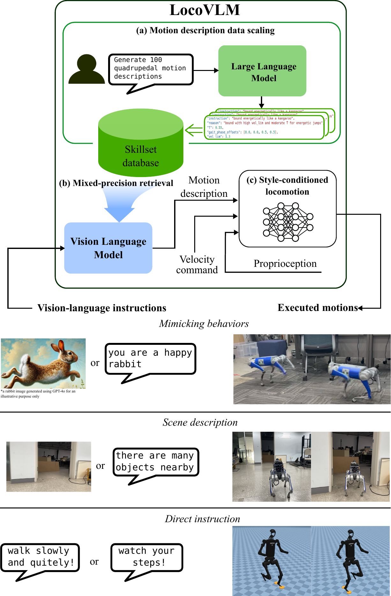
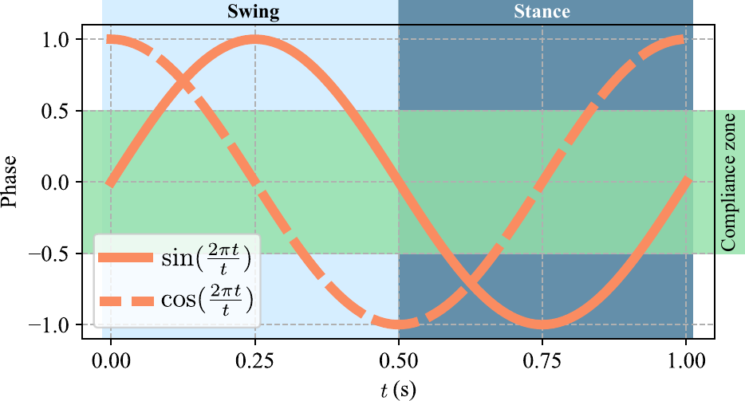
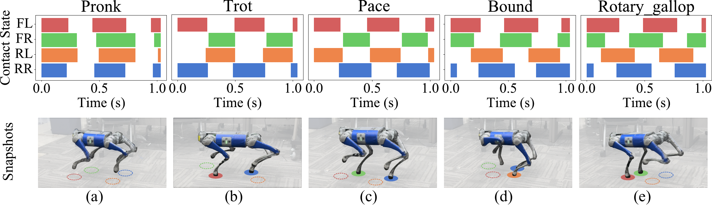
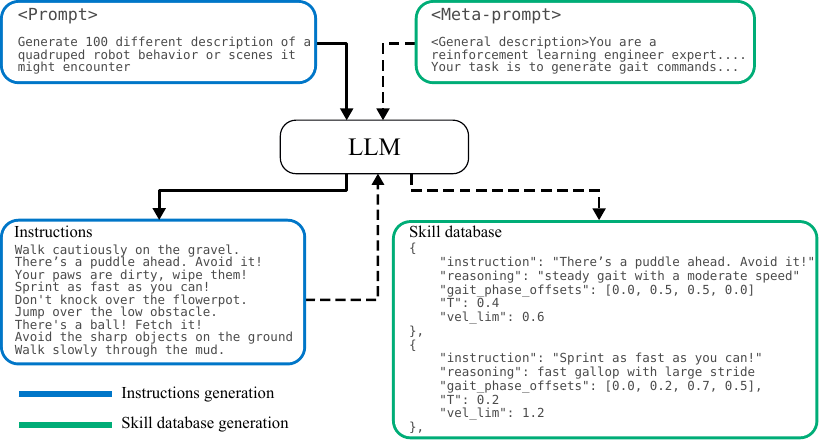
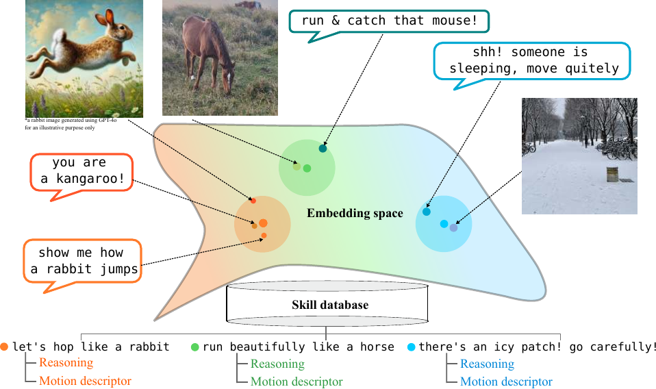
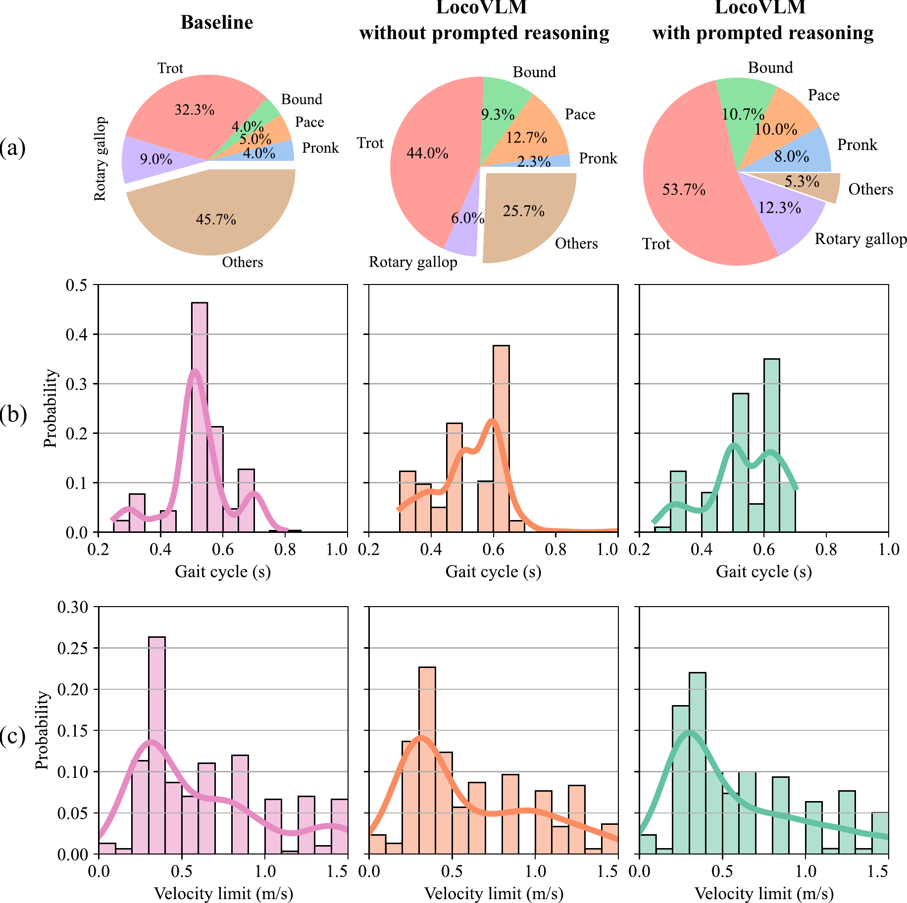
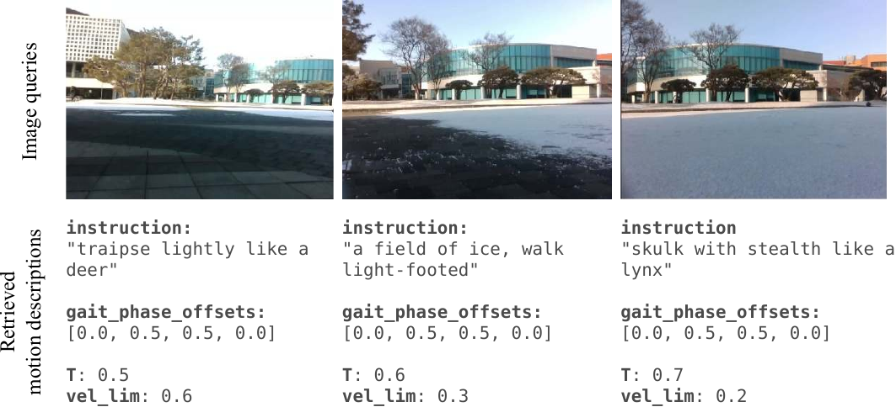
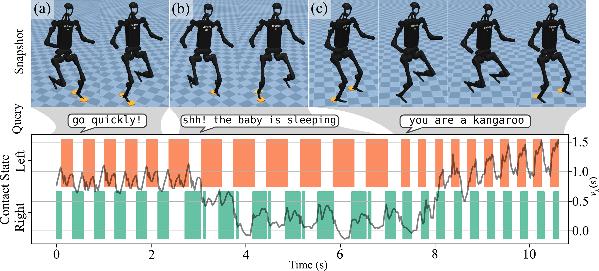

Recent advances in legged locomotion learning are still dominated by the utilization of geometric representations of the environment, limiting the robot's capability to respond to higher-level semantics such as human instructions. To address this limitation, we propose a novel approach that integrates high-level commonsense reasoning from foundation models into the process of legged locomotion adaptation. Specifically, our method utilizes a pre-trained large language model to synthesize an instruction-grounded skill database tailored for legged robots. A pre-trained vision-language model is employed to extract high-level environmental semantics and ground them within the skill database, enabling real-time skill advisories for the robot. To facilitate versatile skill control, we train a style-conditioned policy capable of generating diverse and robust locomotion skills with high fidelity to specified styles. To the best of our knowledge, this is the first work to demonstrate real-time adaptation of legged locomotion using high-level reasoning from environmental semantics and instructions with instruction-following accuracy of up to 87% without the need for online query to on-the-cloud foundation models.

Style-conditioned locomotion policy with compliant contact tracking for robust and diverse gaits
LLM-powered skill database mapping language instructions to executable motion descriptors
Real-time VLM-based mixed-precision retrieval from vision or language inputs
Following gait styles is great, but enforcing them too rigidly can compromise the robot's stability on rough terrain. Our compliant contact tracking method introduces a compliance threshold that allows the robot to momentarily deviate from the desired gait pattern when it encounters disturbances, achieving the best of both worlds: accurate style execution and robust locomotion.
The locomotion policy is parameterized by a gait cycle duration, gait phase offsets, and a velocity limit—a minimal but expressive set of parameters that can represent diverse locomotion styles including pronk, trot, pace, bound, and rotary gallop.
Compliant gait tracking on the Unitree Go1. The robot accurately follows five different gait styles while maintaining stability over challenging terrain.


Data collection and labeling is expensive and tedious. Instead, we leverage a large language model (GPT-4o) to automatically generate a skill database that bridges natural language instructions with executable robot motion descriptors. Our two-stage pipeline first generates diverse instructions across three categories—mimicking behaviors, scene responses, and direct instructions—then maps each to a structured motion descriptor through prompted reasoning.
This approach is 5x cheaper than generating entries one-by-one ($0.25 vs. $1.16 per 300 entries) while producing more diverse and structured motion descriptors.


Comparing 300-entry databases generated by different methods, our prompted reasoning approach produces a more balanced gait distribution and reduces unstructured gaits. The baseline (SayTap-style) produces 45.7% unstructured gaits, while LocoVLM with prompted reasoning reduces this to only 5.3%, promoting an even spread across standard gaits.

We use BLIP-2, a pre-trained vision-language model, to ground text or image inputs to the skill database in real time. A key challenge is that naively using cosine similarity for retrieval degrades as the database scales. We address this with our mixed-precision retrieval: first narrowing candidates via cosine similarity (fast), then re-ranking with the ITM head (accurate).
We also discovered that rendering text as an image (text-as-image) and feeding it to the VLM's image encoder significantly improves retrieval, leveraging the VLM's strength in image-text matching.
Retrieval accuracy on 100 manually-annotated instructions. Our mixed-precision retrieval with text-as-image achieves 87%, a 4x improvement over baseline cosine similarity.
LocoVLM can interpret instructions that are not in the database by leveraging the VLM's semantic understanding. This allows natural, intuitive interaction without being constrained by pre-defined queries.
We evaluated LocoVLM outdoors on a campus environment where the robot transitioned from pavement to snow-covered terrain. Using onboard camera images, LocoVLM automatically adapts the robot's behavior: on pavement it chooses a moderate trot ("traipse lightly like a deer"), while on snow it selects slower, cautious gaits ("skulk with stealth like a lynx")—a particularly fitting analogy given the lynx's natural habitat in snowy environments.

How hard is it to apply LocoVLM to a completely different robot? As easy as 1-2-3! We demonstrate zero-shot generalization to the Unitree H1 humanoid by simply training a new style-conditioned locomotion policy (using only the first two gait phase offsets for two legs) and reusing the same skill database generated for the quadruped. No re-training of the VLM or re-generation of the database is needed.
LocoVLM on the Unitree H1 humanoid in MuJoCo simulation. The same skill database is used to interpret instructions like "go quickly!", "shh! the baby is sleeping", and "you are a kangaroo".

@inproceedings{nahrendra2025locovlm,
title = {LocoVLM: Grounding Vision and Language for
Adapting Versatile Legged Locomotion Policies},
author = {Nahrendra, I Made Aswin and Lee, Seunghyun
and Lee, Dongkyu and Myung, Hyun},
booktitle = {ICRA 2025 Workshop on Safe Vision-Language
Models (SafeVLMs)},
year = {2025}
}